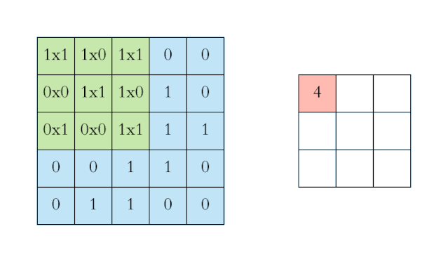
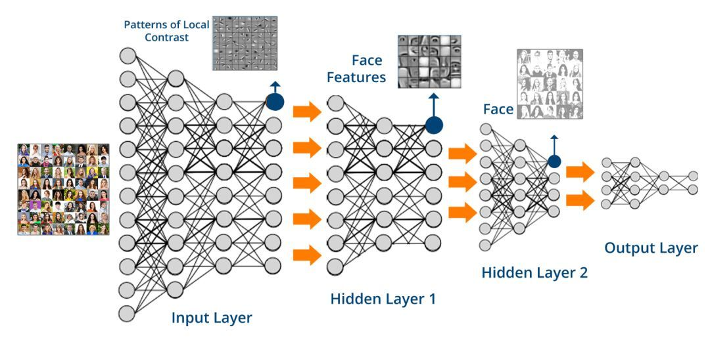

目录
卷积神经网络(Convolutional Neural Network, CNN)¶
CNN 是一种前馈神经网络，通常由一个或多个卷积层（Convolutional Layer）和全连接层（Fully Connected Layer，对应经典的 NN）组成，此外也会包括池化层（Pooling Layer）。 CNN 的结构使得它易于利用输入数据的二维结构。
Warning
注意：前馈神经网络（Feedforward NN）指每个神经元只与前一层的神经元相连，数据从前向后单向传播的 NN。其内部结构不会形成有向环（对比后面要讲到的 RNN/LSTM）。它是最早被发明的简单 NN 类型，前面讲到的 NN、DNN 都是前馈神经网络。
每个卷积层由若干卷积单元组成——可以想象成经典 NN 的神经元，只不过激活函数变成了卷积运算。 卷积运算是有其严格的数学定义的。不过在 CNN 的应用中，卷积运算的形式是数学中卷积定义的一个特例，它的目的是提取输入的不同特征。
一般情况下，从直观角度来看，CNN 的卷积运算，就是下图这样：

Note
上图中左侧的蓝色大矩阵表示输入数据，在蓝色大矩阵上不断运动的绿色小矩阵叫做卷积核，每次卷积核运动到一个位置，它的每个元素就与其覆盖的输入数据对应元素相乘求积，然后再将整个卷积核内求积的结果累加，结果填注到右侧红色小矩阵中。卷积核横向每次平移一列，纵向每次平移一行。最后将输入数据矩阵完全覆盖后，生成完整的红色小矩阵就是卷积运算的结果。
CNN 经常被用于处理图像，那么对应的输入数据就是一张图片的像素信息。
对于这样的输入数据，第一层卷积层可能只能提取一些低级的特征，如边缘、线条、角等，更多层的网络再从低级特征中迭代提取更复杂的特征。

CNN 结构相对简单，可以使用反向传播算法进行训练，这使它成为了一种颇具吸引力的深度学习网络模型。
除了图像处理，CNN 也会被应用到语音、文本处理等其他领域。